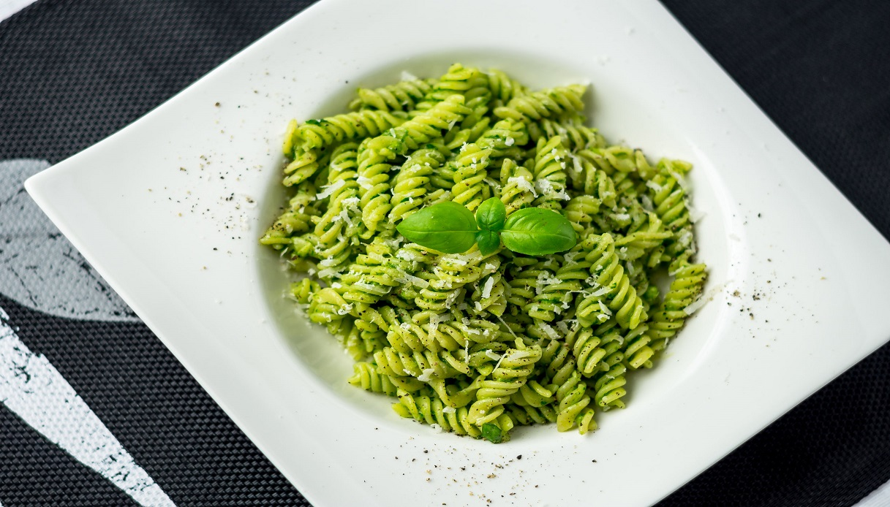

Pasta al pesto

Un fresco piatto da gustare
Avete voglia di un piatto fresco e profumato perfetto per il vostro menù?
Allora le bavette al pesto sono una ricetta classica, quella che stavate cercando!
Il pesto, caposaldo della cucina ligure, è una salsa molto versatile e sempre molto apprezzata sulla tavola,
che può essere utilizzata per realizzare ottimi primi, come le lasagne,
e impreziosire piatti di pasta con il suo gusto ricco e inconfondibile.
Il pesto sprigiona tutta la bontà e la freschezza racchiusa nelle foglie di basilico,
creando un condimento cremoso che esalta i buoni sapori e i colori della cucina mediterranea!
Ingredienti
- Linguine 320g
- Sale grosso 1 pizzico
- Basilico 50g
- Pinoli 15g
- Aglio 1/2 spicchio
- Olio extravergine d'oliva
- Pecorino (da grattuggiare) 30g
- Parmigiano Reggiano DOP (da grattuggiare) 70g
- Basilico q.b.
Preparazione
-
Per preparare le bavette al pesto, incominciate con il pesto alla genovese;
per preparare il pesto, ricordatevi che, una volta sfogliate, le foglie di basilico non vanno lavate
sotto il getto d'acqua, ma pulite con un panno morbido oppure possono essere messe in una
ciotola d’acqua fredda e sciacquate delicatamente.
-
Cominciate a pestare e, quando l’aglio sarà ridotto in crema, aggiungete le foglie
di basilico insieme ad un pizzico di sale grosso. Schiacciate, quindi, il basilico contro
le pareti del mortaio, ruotando il pestello da sinistra verso destra e contemporaneamente
ruotate il mortaio in senso contrario (da destra verso sinistra) e continuate così fino
a quando dalle foglie di basilico non uscirà un liquido verde brillante.
-
A questo punto unite i pinoli e ricominciate a pestare per ridurre in crema.
Aggiungete i formaggi un po' alla volta che andranno a rendere ancora più cremosa
la salsa e per ultimo unite l'olio di oliva extravergine che andrà versato a filo,
mescolando continuamente con il pestello.
-
Amalgamate bene gli ingredienti fino ad ottenere una salsa omogenea.
Mettete sul fuoco una pentola con abbondante acqua salata e, quando l'acqua avrà sfiorato il bollore,
fate cuocere la pasta. Ora mettete il pesto in una padella ampia (a fuoco spento)
e stemperatelo con un po' di acqua di cottura della pasta.
-
Mescolate con una spatola e, non appena la pasta sarà pronta, aggiungetela
direttamente al pesto; amalgamate il tutto per insaporire,
infine servite le vostre bavette al pesto, guarnendo con qualche foglia di basilico.